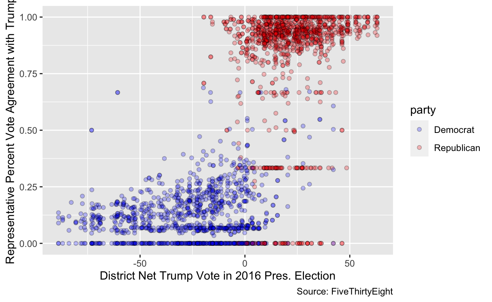
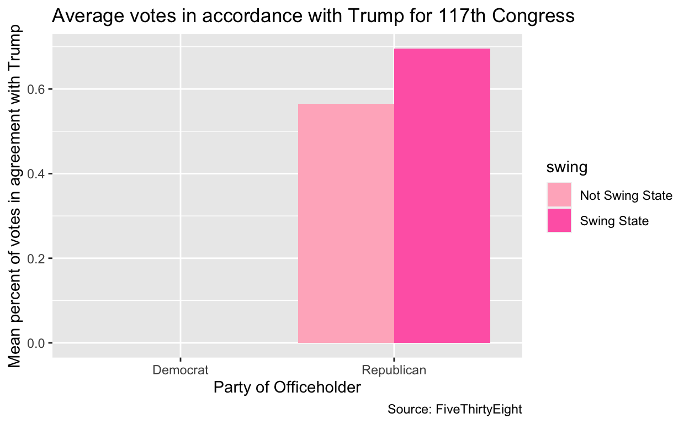

My final project
My research question is whether being in a swing state makes a US House Representative quantifiably more moderate in voting patterns relative to their party. I am interested in this because there is discussion in media and political forums that being from a swing state, in a way, produces more moderate candidates who are less far from the political center sine they are in a more precarious electoral position. These arguments seem to make sense, but are all really abstract when trying to truly get a sense of what they mean by more moderate, how this relates to being from a swing state, and what can be called the political center. In that sense, it is hard to test this theory, but using my data I hope to measure whether US House Representatives vote in a more moderate manner relative to their party if they are from a swing state.
This is my data, averages. It measures an array of things, including a given person that was in the US House of Representatived during either the 115, 116, or 117 Congress. This covers the four years of Donald Trump’s term, as well as the Congress immediately after. In it is information like each candidates state, district number, and party. Essential to what we will be measuring is the net_trump_vote value, which measures the difference between the percentage of of votes that went to Trump in that district in 2016 minus those that went to Clinton. We will also be looking at the agree_pct, which measures the percentage of votes which the candidate cast during a specific congress that agreed with Trump’s position on legislation. 1 is representative of 100%, that all of their votes agreed with Trump’s position during that specific Congress, and 0 denotes complete disagreement with Trump.
## mutating my data to sort it
averages <- averages |>
mutate(swing = case_when(
state == "FL" ~ "Swing State",
state == "NC" ~ "Swing State",
state == "NV" ~ "Swing State",
state == "PA" ~ "Swing State",
state == "MI" ~ "Swing State",
state == "WI" ~ "Swing State",
state == "AZ" ~ "Swing State",
state == "NH" ~ "Swing State",
state == "IA" ~ "Swing State",
state == "GA" ~ "Swing State",
state == "MN" ~ "Swing State",
state == "CO" ~ "Swing State",
state == "TX" ~ "Swing State",
state == "OH" ~ "Swing State",
state == "VA" ~ "Swing State",
)) |>
mutate(swing = if_else(is.na(swing), "Not Swing State", "Swing State")) |>
mutate(party = case_when(
party == "D" ~ "Democrat",
party == "Democrat" ~ "Democrat",
party == "R" ~ "Republican",
party == "Republican"~"Republican",
party == "I" ~ "Independent",
party == "Independent" ~ "Independent",
party == "Libertarian" ~ "Libertarian"
)) |>
drop_na(agree_pct, net_trump_vote, party)
averages <- averages |>
subset(party == "Democrat" | party == "Republican")In this chunk, I first made a new variable which denotes whether a state is a swing state or not swing state by the standards of the 2020 Presidential election. For this, I used the states that CNN Politics considered battlegrounds, regardless of margin. It is important to note, then, that this includes states like Texas which are considered swing because of their possibility to elect Demcorats, despite consistently voting Republican when taking the entire state into account.
I then mutated the party names to standardize them, as some were full party names and some were abbreviated. I dropped all rows without a net Trump vote score, an agree percent, or party listed, as these are the variable of interest in this project.
Finally, I subsetted this data to only include Democrats and Republicans, as both Independents and Libertarians had too few representatives, and these amounts fluctuated across congresses and swing states/not swing states, that I couldn’t conclude much from them.
I am using the agree percentage of each legislator to gather my conclusions. This is the percentage of the total votes the representative cast in which they agreed with Trump’s policy position.
## summarizing the spread of my dependent variable, vote agreement with trump, via a scatterplot
net_trump_summary <- averages |>
ggplot(mapping = aes(x = net_trump_vote, y = agree_pct, fill = party)) +
geom_jitter(shape = 21, alpha = 0.25) +
scale_fill_manual(values = aes("Democrat" = "blue", "Republican" = "red")) +
labs(x = "District Net Trump Vote in 2016 Pres. Election",
y = "Representative Percent Vote Agreement with Trump",
caption = "Source: FiveThirtyEight")
net_trump_summary
This graph shows the agree_pct, or percentage of total votes cast that agree with Trump’s policy stance, dependent on the net Trump vote share of their disrict in 2016, or net_trump_vote. It shows that the vast majority of districts whose net Trump vote was below zero, or that he got a smaller share of votes than Clinton, elected Representatives that agreed with Trump less than half of the time, and who were mostly Democrats. In districts where Trump got a larger vote share than Clinton, Representatives tended to vote in agreement with Trump more than half of the time, and were overwhelmingly Republican.
The limitations of this graph is that it doesn’t distinguish between swing and non swing states. I described a general pattern in the previous paragraph, but we can see, for example, that some Republicans break the trend and tend to vote more against Trump than they do with him, and some Democrats the opposite. Further, we see how these trend-breaking points appear more when the net Trump vote of a district is closer to zero, signaling a smaller electoral margin. However, we do not know if there is any pattern of these standout points representing Representatives from swing states, or any other pattern.
## creating a difference in means of average Trump agreement between members from swing and non-swing states, separated by party
## Difference in means by party average Trump vote, not accounting for whether members come from swing states.
DiM_party<-averages |>
group_by(party) |>
summarize(mean_agree = mean(agree_pct)) |>
pivot_wider(
names_from = party,
values_from = mean_agree
)
knitr::kable(DiM_party, col.names = c("Avg. Agree with Trump, Democrats", "Avg. Agree with Trump, Republicans"))| Avg. Agree with Trump, Democrats | Avg. Agree with Trump, Republicans |
|---|---|
| 0.1241454 | 0.844801 |
## Difference in means by party, measuring the change correlated with being from a swing state or not.
DiM_swing <- averages |>
group_by(swing, party) |>
summarize(mean_agree = mean(agree_pct)) |>
pivot_wider(
names_from = swing,
values_from = mean_agree
) |>
mutate(ntv_diff = `Swing State` - `Not Swing State`)
DiM_swing# A tibble: 2 × 4
party `Not Swing State` `Swing State` ntv_diff
<chr> <dbl> <dbl> <dbl>
1 Democrat 0.119 0.133 0.0139
2 Republican 0.825 0.867 0.0413knitr::kable(DiM_swing, col.names = c("Party", "Avg. Agree with Trump, non-swing states", "Avg. Agree with Trump, swing states", "Net Trump Agree Difference"))| Party | Avg. Agree with Trump, non-swing states | Avg. Agree with Trump, swing states | Net Trump Agree Difference |
|---|---|---|---|
| Democrat | 0.1190278 | 0.1329431 | 0.0139154 |
| Republican | 0.8253024 | 0.8665535 | 0.0412511 |
In the first knitted tibble, which is the 1x2 knitted tibble, I measured the average agreement with Trump percent across all legislators of the Democratic and Republican parties. The average agreement with Trump vote is 12.415% across all Democratic legislators, while the average Trump vote for Republican legislators is 22.17.
In the second knitted tibble, which is 2x4, candidates of each party are divided on whether they are from a swing or not swing state, with the difference between these groups reported as well. In this, we can see that Democrats in swing states, with an average agreement with Trump percent of 13.29%, is 1.39 percentage points higher than those not from swing states who had an average of 11.90%. Interestingly, the opposite occurs among Republicans, as those in swing states had an average agreement with Trump of 86.66%, 4.13 percentage points higher than the average agreement with Trump of Republicans not from swing states, who had an average Trump vote of 82.53%.
In Democrats, we see the expected moderation of views towards a middle average Trump vote that is closer to 50%. However, among Republicans, those from swing states also had a higher average agreement with Trump than Republican members from the House that are not swing states, signaling a more far-right platform for those swing-state Republicans.
To better understand this trend, we need to dig further.
## making a barplot to visualize the difference in mean Trump agreement across swing state and non-swing state House members, separated by party
averages |>
group_by(swing, party) |>
summarize(mean_agree = mean(agree_pct)) |>
ggplot(aes(x = party, y = mean_agree, fill = swing)) +
geom_col(position = "dodge") +
scale_fill_manual(values = c(`Swing State` = "purple", `Not Swing State` = "violet")) +
labs(
x = "Party of Officeholder",
y = "Mean percent of votes in agreement with Trump",
title = "Average votes in accordance with Trump for 115-117 Congress",
caption = "Source: FiveThirtyEight"
)This graph is a visualization of my previous tibble measuring the average agreement with Trump for each major party across the swing states and not swing states. This demonstrates that the average agreement with Trump among Democrats is slightly higher than their non-swing state party-mates. This signals a moderation among those from these electorally precarious states. The opposite is true among Republicans.
This may be affected by the national environment and party platforms of candidates, but to better understand these occurences, it may be useful to break the data down into visualizations per congress to see if there are any time-related trends.
## creating similar barplots as above to visualize the difference in mean Trump agreement across swing state and non-swing state House members, separated by party AND congress in order to see whether time may have an effect on the dependent variable.
## Barplot for 115th Congress
averages |>
filter(congress == 115) |>
group_by(swing, party) |>
summarize(mean_agree = mean(agree_pct)) |>
ggplot(aes(x = party, y = mean_agree, fill = swing)) +
geom_col(position = "dodge") +
scale_fill_manual(values = c(`Swing State` = "hotpink", `Not Swing State` = "pink1")) +
labs(
x = "Party of Officeholder",
y = "Mean percent of votes in agreement with Trump",
title = "Average votes in accordance with Trump for 115th Congress",
caption = "Source: FiveThirtyEight"
)## Barplot for 116th Congress
averages |>
filter(congress == 116) |>
group_by(swing, party) |>
summarize(mean_agree = mean(agree_pct)) |>
ggplot(aes(x = party, y = mean_agree, fill = swing)) +
geom_col(position = "dodge") +
scale_fill_manual(values = c(`Swing State` = "hotpink", `Not Swing State` = "pink1")) +
labs(
x = "Party of Officeholder",
y = "Mean percent of votes in agreement with Trump",
title = "Average votes in accordance with Trump for 116th Congress",
caption = "Source: FiveThirtyEight"
)##Barplot for 117th Congress
averages |>
filter(congress == 117) |>
group_by(swing, party) |>
summarize(mean_agree = mean(agree_pct)) |>
ggplot(aes(x = party, y = mean_agree, fill = swing)) +
geom_col(position = "dodge") +
scale_fill_manual(values = c(`Swing State` = "hotpink", `Not Swing State` = "pink1")) +
labs(
x = "Party of Officeholder",
y = "Mean percent of votes in agreement with Trump",
title = "Average votes in accordance with Trump for 117th Congress",
caption = "Source: FiveThirtyEight"
)
In the first graph, Average votes in accordance with Trump for 115th Congress, we see my initial hypothesis of swing states having, on average, more moderate candidates displayed. For Democrats of this Congress, those from a swing state tended to vote slightly more in accordance with Trump compared to their non-swing state partymates by about 5 percentage points. With Republicans we also see moderation, with swing state Republican Representatives voting with Trump about 1 percentage point less than non-swing state Republicans, possibly signaling a slight moderation.
In the graph Average votes in accordance with Trump for 116th Congress, we see slightly different patterns emerging. swing state Democrats still vote more in accordance with Trump versus non-swing state Democrats by about 1%, still showing an apparent moderation but on a much smaller scale. In Republicans, we see the opposite from what we saw during the 115th Congress. Swing state Republicans tend to vote with Trump 3% more than their non-swing state
It is hard to discern complete data from the third graph, Average votes in accordance with Trump for 117th Congress, as it is an incomplete set of agreement statistics, accounting for the lack of any data on Democrats. However, in this data we see an even wider gap between swing state Republicans and non-swing state Republicans, as those from swing states voted with Trump 13 percentage points more than non-swing state Republicans.
This increasingly right-leaning swing state Republican voting pattern may be due to the fact that moderation of views became less important during and after Trump’s presidency. Instead, many Republicans tried to, in a way, out-Trump each other as the ideal candidate to win a seat, almost especially for seat challengers in swing states as a tactic to stand out. This may account for the increasingly right-leaning swing state group of Republicans over those not from swing states, who may not have had to make as much of a standout platform because their election was much more assured.
Comparatively, we see both swing state and non-swing state Democrats vote less with Trump over time. This may be due to the fact that, during and after the 2018 midterms, a central facet of the Democratic platform was pure opposition to Trump and the percieved Republican stance on issues.
## creating a differences in differences table to see how the difference of average Trump vote agreement between members from swing states and non-swing states for each party changes over time (between each Congress). This table will have differences between each set of Congress (115 to 116 and 116 to 117) as well as overall difference in differences measure.
DiD_swing <- averages |>
group_by(swing, congress, party) |>
summarize(mean_agree = mean(agree_pct)) |>
pivot_wider(
names_from = swing,
values_from = mean_agree
) |>
mutate(agree_diff = `Swing State` - `Not Swing State`) |>
select(!`Not Swing State`) |>
select(!`Swing State`) |>
pivot_wider(
names_from = congress,
values_from = agree_diff
) |>
select(!`0`) |>
mutate(
"15_16_diff" = `116`-`115`,
"16_17_diff" = `117` - `116`,
"overall_diff" = `117` - `115`
)
DiD_swing# A tibble: 2 × 7
party `115` `116` `117` `15_16_diff` `16_17_diff` overall_diff
<chr> <dbl> <dbl> <dbl> <dbl> <dbl> <dbl>
1 Democ… 0.0476 0.00664 0 -0.0409 -0.00664 -0.0476
2 Repub… -0.00588 0.0275 0.130 0.0334 0.102 0.136 knitr::kable(DiD_swing, col.names = c("Party", "Avg. Trump Vote Difference, 115th Congress", "Avg. Trump Vote Difference, 116th Congress", "Avg. Trump Vote Difference, 117th Congress", "Avg. Trump Vote Diff. Change, 116th from 115th Congress", "Avg. Trump Vote Diff. Change, 117th from 116th Congress", "Avg. Overall Trump Vote Change Difference"))| Party | Avg. Trump Vote Difference, 115th Congress | Avg. Trump Vote Difference, 116th Congress | Avg. Trump Vote Difference, 117th Congress | Avg. Trump Vote Diff. Change, 116th from 115th Congress | Avg. Trump Vote Diff. Change, 117th from 116th Congress | Avg. Overall Trump Vote Change Difference |
|---|---|---|---|---|---|---|
| Democrat | 0.0475515 | 0.0066433 | 0.0000000 | -0.0409082 | -0.0066433 | -0.0475515 |
| Republican | -0.0058801 | 0.0274906 | 0.1296472 | 0.0333707 | 0.1021566 | 0.1355273 |
In the first three columns of this chart, we see the difference between the swing state and non-swing state candidates within each Congress, as described above in the graphs. In the latter three columns, we can see how these differences in votes in accordance with Trump change between Congresses.
For Democrats, due to the lack of data for the 117th Congress, the only change we are really interested in is the -4.09 percentage point decrease in the difference of the average votes in accordance with Trump between swing state and non-swing state Representatives from the 115th to the 116th Congress. This signals that, coinciding with Trump being president and possibly due to the electorate reaction of those policies, Democrats became more uniform in their opposition to Trump regardless of where they were elected from.
For Republicans, the most accurate data is the same frame, the percentage point incrase of 3.34 in the difference of the average votes in accordance with Trump between swing state and non-swing state Representatives from the 115th to the 116th Congress. This signals that, with Trump in office, swing state Republicans relative to their non-swing state partymates actually grew more right leaning in their agreement with Trump. This may be due to a perceived popularity of Trump-style Republicanism that emboldened these vulnerable Republicans to move rightwards. This may also be due to the unpopularity of moderate swing state Republicans, such as those who voted in favor of the impeachment of Trump, many of whom then went on to either went on to lose reelection or not seek it at all. With this, these swing state Republicans may have perceived that they would have better election odds to align themselves with Trump and his particular brand of politics, which was dominating the party at that time.
## Creating linear regressions that measures the correlation between being from a swing state and the agree percent of representatives, controlling for the net Trump 2016 vote margin and which Congress the data point is from. I am making two separate regressions, one for each party, as they so far appear to have different trends, so I beleiv it would be more valuable to isolate them by party in different regressions.
## subsetting
averages_dem <- averages |>
filter(party == 'Democrat')
averages_dem# A tibble: 1,123 × 12
congress chamber bioguide last_name state district party votes
<dbl> <chr> <chr> <chr> <chr> <dbl> <chr> <dbl>
1 0 house A000148 Auchincloss MA 4 Democrat 3
2 117 house A000148 Auchincloss MA 4 Democrat 3
3 0 house A000370 Adams NC 12 Democrat 183
4 115 house A000370 Adams NC 12 Democrat 92
5 116 house A000370 Adams NC 12 Democrat 88
6 117 house A000370 Adams NC 12 Democrat 3
7 0 house A000371 Aguilar CA 31 Democrat 184
8 115 house A000371 Aguilar CA 31 Democrat 94
9 116 house A000371 Aguilar CA 31 Democrat 87
10 117 house A000371 Aguilar CA 31 Democrat 3
# ℹ 1,113 more rows
# ℹ 4 more variables: agree_pct <dbl>, predicted_agree <dbl>,
# net_trump_vote <dbl>, swing <chr>averages_rep <- averages |>
filter(party == 'Republican')
averages_rep# A tibble: 1,208 × 12
congress chamber bioguide last_name state district party votes
<dbl> <chr> <chr> <chr> <chr> <dbl> <chr> <dbl>
1 0 house A000055 Aderholt AL 4 Republican 182
2 115 house A000055 Aderholt AL 4 Republican 95
3 116 house A000055 Aderholt AL 4 Republican 84
4 117 house A000055 Aderholt AL 4 Republican 3
5 115 house A000367 Amash MI 3 Republican 96
6 116 house A000367 Amash MI 3 Republican 2
7 0 house A000369 Amodei NV 2 Republican 182
8 115 house A000369 Amodei NV 2 Republican 94
9 116 house A000369 Amodei NV 2 Republican 85
10 117 house A000369 Amodei NV 2 Republican 3
# ℹ 1,198 more rows
# ℹ 4 more variables: agree_pct <dbl>, predicted_agree <dbl>,
# net_trump_vote <dbl>, swing <chr>## My regressions
dem_swing_change <- lm(agree_pct ~ swing + net_trump_vote + votes + as.factor(congress), data = averages_dem)
dem_swing_change
Call:
lm(formula = agree_pct ~ swing + net_trump_vote + votes + as.factor(congress),
data = averages_dem)
Coefficients:
(Intercept) swingSwing State
1.839e-01 7.369e-03
net_trump_vote votes
1.146e-03 -2.277e-05
as.factor(congress)115 as.factor(congress)116
9.962e-02 -6.125e-02
as.factor(congress)117
-1.566e-01 rep_swing_change <- lm(agree_pct ~ swing + net_trump_vote + votes + as.factor(congress), data = averages_rep)
rep_swing_change
Call:
lm(formula = agree_pct ~ swing + net_trump_vote + votes + as.factor(congress),
data = averages_rep)
Coefficients:
(Intercept) swingSwing State
7.658e-01 5.670e-02
net_trump_vote votes
2.990e-03 3.425e-04
as.factor(congress)115 as.factor(congress)116
4.563e-02 4.115e-05
as.factor(congress)117
-2.387e-01 library(tinytex)
## my labels
var_labels <- c(
"(Intercept)" = "(Intercept)",
"swingSwing State" = "Swing State District",
"net_trump_vote" = "Trump Vote Margin, 2016",
"votes" = "Number of votes cast by legislator",
"as.factor(congress)115" = "Member during 115th Congress",
"as.factor(congress)116" = "Member during 116th Congress",
"as.factor(congress)117" = "Member during 117th Congress"
)
modelsummary::modelsummary(dem_swing_change,
statistic = c("s.e. = {std.error}",
"p = {p.value}"),
gof_map = c("nobs", "r.squared", "adj.r.squared"), coef_map = var_labels)| (1) | |
|---|---|
| (Intercept) | 0.184 |
| s.e. = 0.011 | |
| p = <0.001 | |
| Swing State District | 0.007 |
| s.e. = 0.005 | |
| p = 0.131 | |
| Trump Vote Margin, 2016 | 0.001 |
| s.e. = 0.000 | |
| p = <0.001 | |
| Number of votes cast by legislator | 0.000 |
| s.e. = 0.000 | |
| p = 0.760 | |
| Member during 115th Congress | 0.100 |
| s.e. = 0.008 | |
| p = <0.001 | |
| Member during 116th Congress | −0.061 |
| s.e. = 0.008 | |
| p = <0.001 | |
| Member during 117th Congress | −0.157 |
| s.e. = 0.012 | |
| p = <0.001 | |
| Num.Obs. | 1123 |
| R2 | 0.589 |
| R2 Adj. | 0.587 |
modelsummary::modelsummary(rep_swing_change,
statistic = c("s.e. = {std.error}",
"p = {p.value}"),
gof_map = c("nobs", "r.squared", "adj.r.squared"), coef_map = var_labels)| (1) | |
|---|---|
| (Intercept) | 0.766 |
| s.e. = 0.023 | |
| p = <0.001 | |
| Swing State District | 0.057 |
| s.e. = 0.012 | |
| p = <0.001 | |
| Trump Vote Margin, 2016 | 0.003 |
| s.e. = 0.000 | |
| p = <0.001 | |
| Number of votes cast by legislator | 0.000 |
| s.e. = 0.000 | |
| p = 0.032 | |
| Member during 115th Congress | 0.046 |
| s.e. = 0.017 | |
| p = 0.006 | |
| Member during 116th Congress | 0.000 |
| s.e. = 0.018 | |
| p = 0.998 | |
| Member during 117th Congress | −0.239 |
| s.e. = 0.025 | |
| p = <0.001 | |
| Num.Obs. | 1208 |
| R2 | 0.280 |
| R2 Adj. | 0.277 |
Here, there are two linear regressions, the first measuring the relationship between being elected from a swing state and average agreement with Trump for Democrats, and the second for Republicans.
For Democrats, those from a swing state tended to vote with Trump 0.7 percentage points more holding congress, number of votes cast in their term, and Trump’s 2016 net margin in their district constant. However, with a p-value of 0.131, this doesn’t appear significant. We, however, do see that notwithstanding the correlation between swing state and average Trump agreement, Democratic members from the 116th Congress voted with Trump 6.1 percent less than the baseline intercept of 18.4%, with a p-value of less than 0.1%, meaning that this value is statistically significant. This signlas a possible downward trend in Democratic agreement with Trump’s policy positions.
This may possibly be due to the national environment that allowed the blue wave of 2018 to occur, in which there was a massive anti-Trump, and more broadly anti-Republican, election results. From this, Democrats may have seen that voting against Trump is a way to maintain Democratic support.
Comparatively, for Republicans who are described in the second regression, members from a swing state tended to vote with Trump 5.7 percentage points more often than those not from swing states, holding congress, number of votes cast in their term, and Trump’s 2016 net margin in their district constant. This value has a p-value of 0.1%, signaling that it statistically significant and that this change would not happen purely by chance. Further if we look at the average Trump agreement change from the baseline of 76.6% agreement, notwithstanding the correlation between swing state and average Trump agreement, we see an overall decline in average Trump support by 23.9 percentage points. The p-value for this is less than 0.1%, so it is highly unlikely this occurred by chance. However, it is important to note that this change is based on a small, incomplete sample of Representatives of the 117th Congress. If we go back to the 116th Congress, we se a 0 percentage point change from the baseline, swing state status notwithstanding, with a p-value of 99.8%, we cannot gather that swing state status has an effect when looking at the change going into this year.
From my findings, it appears that Democratic members of the house from swing states were more moderate, but throughout the course of Trump’s presidency they shifted to voting in line with their non-swing state Democratic colleagues. This initially proved my hypothesis true, but as voting patterns shifted I could no longer apply my hypothesis to the situation. Among Republicans, my hypothesis was initially marginally true, with swing state Republicans being marginally more moderate than their non-swing state colleagues. However, we saw them become less moderate than their swing state colleagues by the 116th Congress, and even more so in the 117th Congress. My data was also limited by the fact that there was incomplete data for the 117th Congress. I couldn’t draw conclusions among Democrats due to this, and could only speculate for Republicans, but with the data so lacking I couldn’t confidently make a conclusion transferable to the voting patterns of all Republican members of Congress during that time. I think it would be very interesting to have a complete set of data from the 117th Congress, and data from the current and future Congresses, especially depending on whether Trump wins the Republican nomination and/or presidency in 2024, or fades from influence, and see how the Republican party’s platform adjusts to these changes and Democrats account for the reaction to this.
I would guess the patterns we see so far are explained by the national tension around Trump-endorsed positions. There is a movement among the Republican party to follow Trump’s policy positions in order to be competitive, which may explain the rise in swing-state Republican agreement we saw between the 115th and 116th Congress relative to their non-swing state colleagues, and further in the 117th Congress, although that is too little data to draw any real conclusions. Among Democrats, we see the reaction to this movement, as a central facet of the Democratic party during the presidency was to act against policies endorsed by the administration, which could explain the unifying we saw between swing state and non-swing state agreement averages.